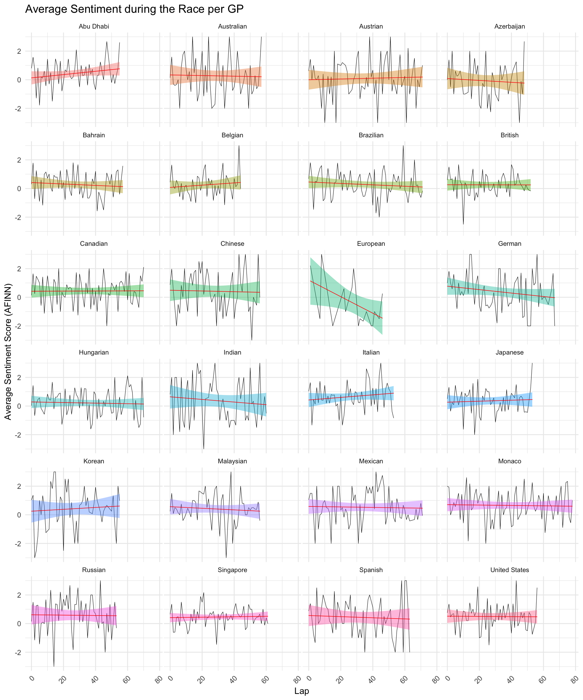

F1 Radio-Analyse
Sommmer 2023
Hintergrund
In einem Masterkurs zur Datenauswertung mit R war die Abschlussaufgabe das Explorieren eines selbst gecrawlten Datensatzes.
Ich entschied mich, Radiotranskripte aus allen Formel-1-Rennen von 2013 bis 2017 von racefans.net mit RSelenium zu holen und diese nach Fahrern und Teams sortiert zu analysieren.
Dabei stützte ich mich auf simple Verteilungsdiagramme, Word Clouds und einfache Sentimentanalyse.
Auszüge
Nicht alle Radionachrichten werden übertragen, und aus den Daten ist erkennbar, dass häufiger die Kommuniktaion erfolgreicher Teams abgespielt werden.
Dieser Graph sieht hauptsächlich einfach nur schön aus; abgebildet ist das durschnittliche Sentiment pro Runde für jeden Grand Prix auf dem Kalender.
Die Korrelation zwischen Platzierung in der Weltmeisterschaft und Stimmung der Nachrichten fiel kleiner aus als erwartet. Das Williams-Team ist so glücklich auf Platz 17 und 18 wie Mercedes an der Spitze der Liste, und bei Ferrari war die Stimmung meist schlecht.